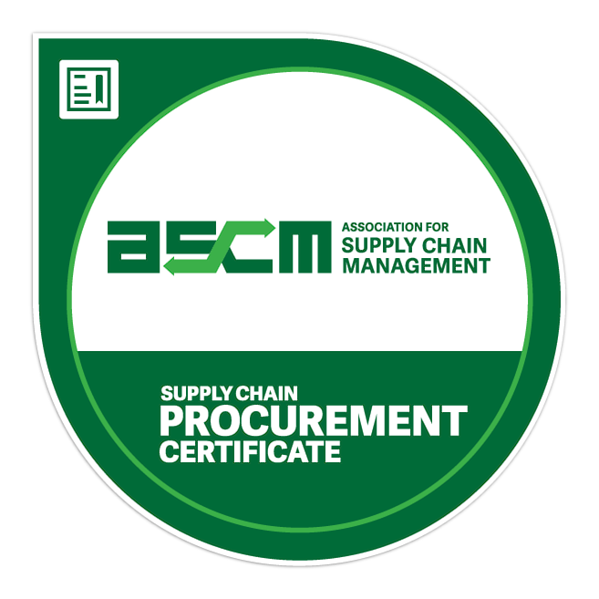

Collaborating with Fleming Super Store, I utilized Power BI to tackle financial and customer issues. The result: a 15% boost in revenue, a 20% increase in customer satisfaction, and a significant drop in stockouts from 20 to 5 per month. The success demonstrates the impactful role of data-driven insights in enhancing operational efficiency and business outcomes.


In March 2023, I participated as a student volunteer team dedicated to uplifting children with critical illnesses through the Make-A-Wish Foundation. Our primary endeavor, an 8-Ball Pool Event, garnered significant support, with our online campaign raising $745, Eventbrite registrations contributing $312, and an Ottawa Senators Suite Ticket auction generating an impressive $1500, alongside additional contributions totaling $58. Together, we surpassed our initial fundraising goal of $1000, and raised around $ 2618 in total. Beyond simply playing a game, this event symbolized our commitment to making a tangible difference in the lives of these children and their families. With every dollar raised, we've moved closer to fulfilling the dreams of those in need, fostering hope and resilience in the face of adversity.

Since September 2023, I've enthusiastically participated in various volunteer roles at Fleming College, demonstrating a commitment to enhancing campus life and supporting fellow students. As a current member of the Student Administrative Council (SAC) Street Team, I've dedicated my efforts to promoting upcoming events and activities, engaging with students to gather feedback, and assisting with SAC initiatives. My involvement in the Job Fair as a volunteer involved assisting with setup, attendee guidance, and feedback collection, ensuring a seamless experience for both students and employers. Additionally, my role as a Winter Orientation Ambassador allowed me to welcome new students, facilitate activities, and provide valuable information about campus resources. Furthermore, my participation in the Multi-Cultural Showcase highlighted my dedication to celebrating diversity and promoting inclusivity on campus. Through these volunteer experiences, I've not only contributed to the vibrant community at Fleming College but also developed invaluable leadership, communication, and event management skills.

I hold various supply chain and operations management certifications, including the ASCM Supply Chain Procurement Certificate, which highlights my expertise in procurement. I also possess certifications in core supply chain principles, digital transformation, and sustainability, showcasing my commitment to mastering diverse aspects of the field. Certifications like "ESG and Procurement" underscore my focus on environmental responsibility, while others, like "Retail Digital Supply Chain," demonstrate my ability to adapt to evolving industry trends. Overall, my certifications reflect my dedication to continuous learning and make me a knowledgeable and adaptable professional in supply chain management.

I am a dedicated supply chain professional with a proven track record of optimizing operations, ensuring customer satisfaction, and driving efficiency. Beginning as a Manufacturing Engineer at SCHOTT Pharma, I honed my skills in managing production processes and regulatory compliance. Progressing to a Manufacturing Sourcing Specialist role, I excelled in procurement and contract negotiation, reducing lead time and integrating advanced manufacturing technologies. Transitioning to Amazon's Ottawa fulfillment center, I mastered logistics operations and customer satisfaction. At Michaels stores, I merged retail demands with supply chain efficiency. Concurrently, as a Peer Tutor at Fleming College, I contribute to the student community by imparting supply chain management knowledge.